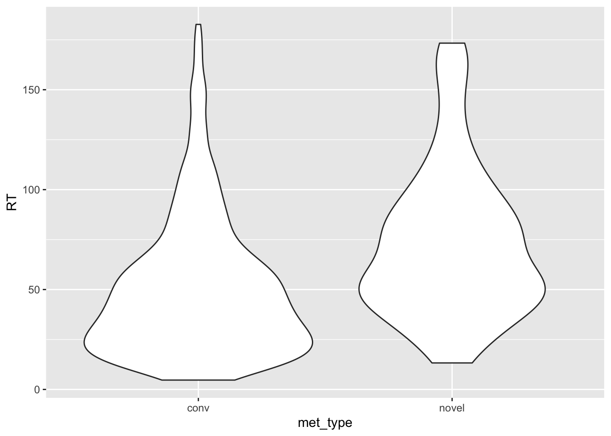
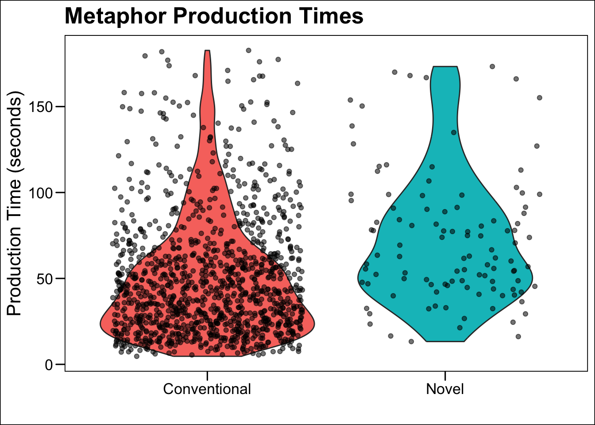
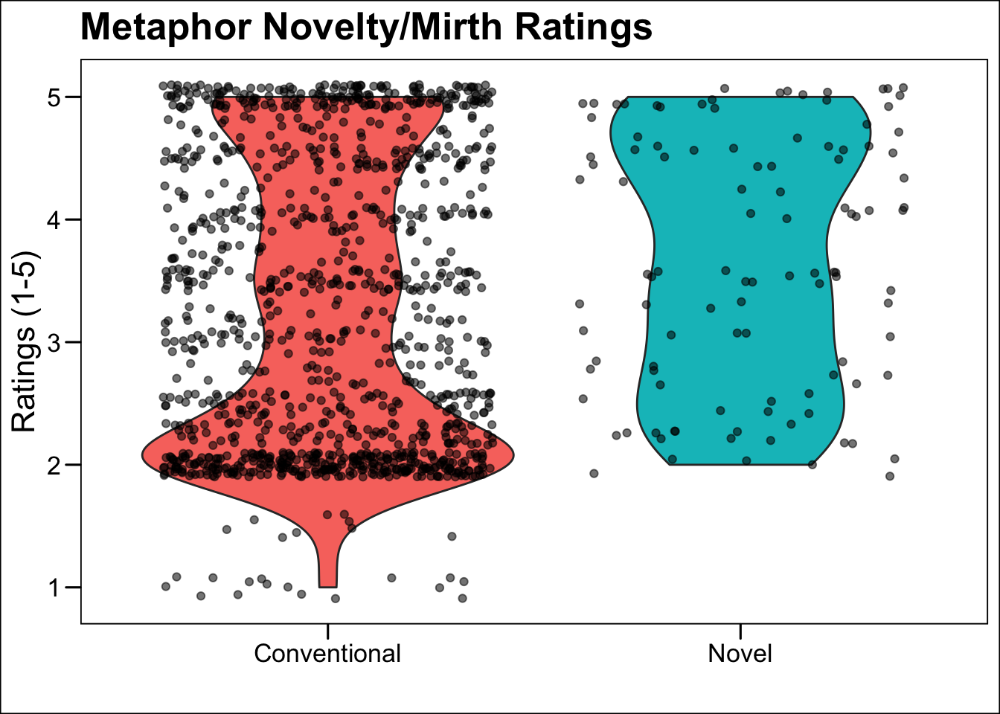
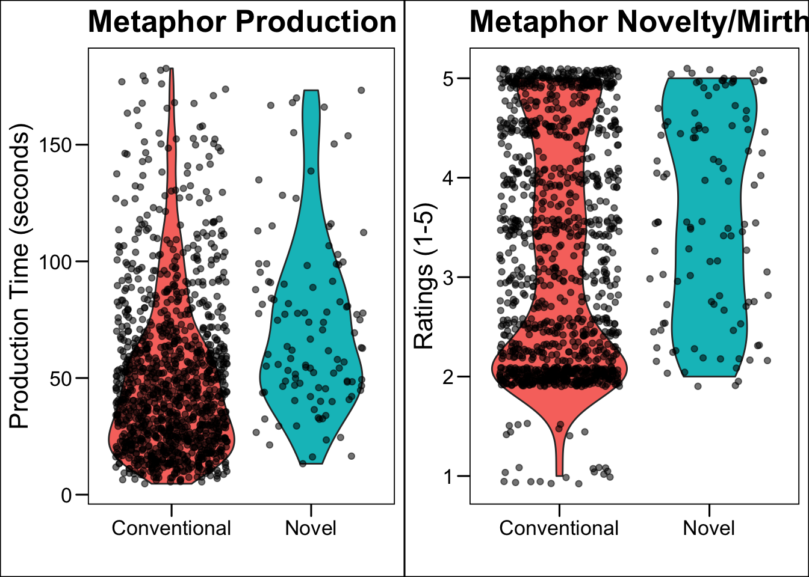

Recreate a plot
Stephen Skalicky
26/05/2021
- Download the
metaphor data.csvfile from https://osf.io/qrc6b/ - Create a new object in R named
metaphorwhich is the result of callingread_csv()onmetaphor data.csv
library(tidyverse)
metaphor <- read_csv('https://www.stephenskalicky.com/r_data/metaphor_data.csv')## Rows: 1304 Columns: 28
## ── Column specification ────────────────────────────────────────────────────────
## Delimiter: ","
## chr (6): metaphor_id, response, met_type, sex, hand, language_group
## dbl (22): subject, conceptual, nm, trial_order, met_stim, met_RT, age, colle...
##
## ℹ Use `spec()` to retrieve the full column specification for this data.
## ℹ Specify the column types or set `show_col_types = FALSE` to quiet this message.- Using a pipe, make a new object called
met.smallfrommetaphor. Usingdplyr::select(), choose the following columns:
- subject, met_type, met_RT, conceptual, nm, NFC
met.small <- metaphor %>%
dplyr::select(subject, met_type, met_RT, conceptual, nm, NFC)- We want to recreate this figure:

- First we need to
mutatethe RT (the time spent writing the metaphor) into seconds. The current measurement is in milliseconds, and we want seconds. Therefore we need to dividemet_RTby 1000. Usingmutate, create a new variable inmet.smallnamed RT, which is the result of dividingmet_RTby 1000. (Note that I am going to extend the pipe from the original creation ofmet.smalleach time).
met.small <- metaphor %>%
dplyr::select(subject, met_type, met_RT, conceptual, nm, NFC) %>%
mutate(RT = met_RT/1000)Next, we need to remove outliers. We will define an outlier as someone who spent longer than 2.5 standard deviations writing their metaphor. We will use z-scores to help us with this (don’t worry if you do not know what that is).
Using mutate, create a new variable in
met.smallnamedzRT, which is the result of calling the functionscaleonmet_RT.
met.small <- metaphor %>%
dplyr::select(subject, met_type, met_RT, conceptual, nm, NFC) %>%
mutate(RT = met_RT/1000) %>%
mutate(zRT = scale(met_RT))- Then, extend the pipe to a new
mutatecall which creates a new variable namedoutliers. The value ofoutlierswill be a1ifzRTis >= to 2.5, otherwise it will be a0. To do this, we can use theif_elsefunction in ourmutatecall (we could also use thecase_whenfunction).
The basic syntax for if_else is if_else(condition, A, B), where if condition = TRUE, do A, otherwise, do B. You can write your mutate call like this:
mutate(outliers = if_else(condition, A, B))
It is up to you to write the correct values for condition, A, and B.
Below is the final pipe will all the previous commands in one pipe. This is again why pipes are cool - you can add each line, step-by-step, as part of your data cleaning / wrangling process. You could easily put all the mutate functions into one call to mutate(), but this method has the advantage of being a bit more easy to read and see how steps link to one another.
met.small <- metaphor %>%
dplyr::select(subject, met_type, met_RT, conceptual, nm, NFC) %>%
mutate(RT = met_RT/1000) %>%
mutate(zRT = scale(met_RT)) %>%
mutate(outliers = if_else(zRT >= 2.5, 1, 0))- How many outliers are there? How can you easily find out using one R function applied to
met.small?
sum(met.small$outliers)## [1] 34- Create a new object named
met.trimwhich is the result of removing the outliers frommet.small. Use thefilter()function.
met.trim <- met.small %>%
dplyr::filter(outliers == 0)
# sanity check
sum(met.trim$outliers)## [1] 0- Create a new object named
met.violinwhich is the result of calling theggplot()function. Inside theggplot()call, set thedataargument tomet.trim, and make aaes()call with the correct x and y axis in order to replicate the chart above. View your plot by running the name of the object (i.e., runmet.violinby itself). Compare your Figure to the one above - is it correct? What else are we missing?
met.violin <- ggplot(data = met.trim, aes(x = met_type, y = RT)) +
geom_violin()
met.violin
- Add the necessary ggplot information (go through this list one-at-a-time)
- before your call to
geom_violin, add a new line with only the functiontheme_base()- you will need the packageggthemes()to do this - in your
geom_violin()function, addaes(fill = met_type) - use a
+sign to add a new function to your ggplot which isscale_x_discrete(). This function can rename the values on your x axis using thelabels()function. Use the templatescale_x_discrete(labels = c())to rename the values ofmet_typeto match the Figure above. - use a
+sign to add a new function to your ggplot which islabs. This function will renamed your axes and figure. Usex =,y =, andtitle =insidelabsto create new labels. We want NO label for the x axis, what can you type to make that happen? - remove the legend using
theme(legend.position = 'none') - add a final
geom_jitter()call. Using this information, what do violin plots show us? How can you interpret this data?
library(ggthemes)
# with a final geom_point() - the original figure does not have these though.
met.violin <- ggplot(data = met.trim, aes(x = met_type, y = RT)) +
geom_violin(aes(fill = met_type)) +
theme_base() +
scale_x_discrete(labels = c('Conventional', 'Novel')) +
labs(y = 'Production Time (seconds)', x = '', title = 'Metaphor Production Times') +
theme(legend.position = 'none') +
geom_jitter(aes(alpha = .5))
met.violin
- Using this information, can you make a new ggplot object named
ratingswhich matches the right panel of the figure above?
ratings <- ggplot(data = met.trim, aes(x = met_type, y = nm)) +
theme_base() +
geom_violin(aes(fill = met_type)) +
scale_x_discrete(labels = c('Conventional', 'Novel')) +
labs(y = 'Ratings (1-5)', x = '', title = 'Metaphor Novelty/Mirth Ratings') +
theme(legend.position = 'none') +
geom_jitter(aes(alpha = .5))
ratings
- Do you want to glue the figures together? You can by using the package
gridExtra. Install the package and then use thegrid.arrange()function to join the two figures.
gridExtra::grid.arrange(met.violin, ratings, nrow = 1)